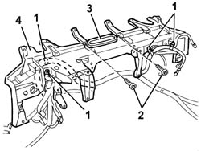

7040A98 INSTRUMENT FACIA TRIM SUPPORT BEAM - R R WITH FACIA REMOVED
- Path
- Procedures > 70 FITTINGS > 7040 BODYSHELL INTERIOR TRIMS AND FITTINGS > 7040A PASSENGER COMPARTMENT TRIM > 7040A98 INSTRUMENT FACIA TRIM SUPPORT BEAM - R R WITH FACIA REMOVED
- Kind
- repair procedure (removal / refitting; the operation number is the code)
- Applies to
- all engines; all production periods
- Interactive page
- https://sloeber94.github.io/elrnDB-aGt/en/#/125001864
Applies to: all engines; all production periods
 Removing
Removing
 Refitting
RefittingOp. 5010B45 DUCT FROM CLIMATE CONTROL SYSTEM - R R
(right and left)
Op. 5010B56 DUCT BETWEEN CLIMATE CONTROL SYSTEM HOUSING AND AIR DUCT TO REAR SEATS R R
Op. 7040A95 REINFORCEMENT BRACKET ONE LH OR RH BETWEEN FACIA SUPPORT BEAM AND BODY R R
Op. 7040L40 REAR COMPARTMENT SCUFF STRIP - R R
(left side)
Op. 5505A10 IGNITION COIL/S - R+R
- 5040C10 air conditioner box - r+r
1. At the bench, disconnect the dashboard wiring retainers from the crossmember.
2. Undo the bolts.
3. Remove the air vent.
4. Recover the dashboard crossmember.

Applies to: all engines; all production periods
Refitting
RemovingCheck that the dashboard crossmember is not damaged.
Reposition the air vent on the dashboard crossmember and fix it with the bolts.
Connect the dashboard wiring retainers to the crossmember.
- 5040C10 air conditioner box - r+r
Op. 5505A10 IGNITION COIL/S - R+R
Op. 7040L40 REAR COMPARTMENT SCUFF STRIP - R R
(left side)
Op. 7040A95 REINFORCEMENT BRACKET ONE LH OR RH BETWEEN FACIA SUPPORT BEAM AND BODY R R
Op. 5010B56 DUCT BETWEEN CLIMATE CONTROL SYSTEM HOUSING AND AIR DUCT TO REAR SEATS R R
Op. 5010B45 DUCT FROM CLIMATE CONTROL SYSTEM - R R
(right and left)
Topics linked from this page (5)
- 5010B45 DUCT FROM CLIMATE CONTROL SYSTEM - R R
- 5010B56 DUCT BETWEEN CLIMATE CONTROL SYSTEM HOUSING AND AIR DUCT TO REAR SEATS R R
- 5505A10 IGNITION COIL/S - R+R
- 7040A95 REINFORCEMENT BRACKET ONE LH OR RH BETWEEN FACIA SUPPORT BEAM AND BODY R R
- 7040L40 REAR COMPARTMENT SCUFF STRIP - R R